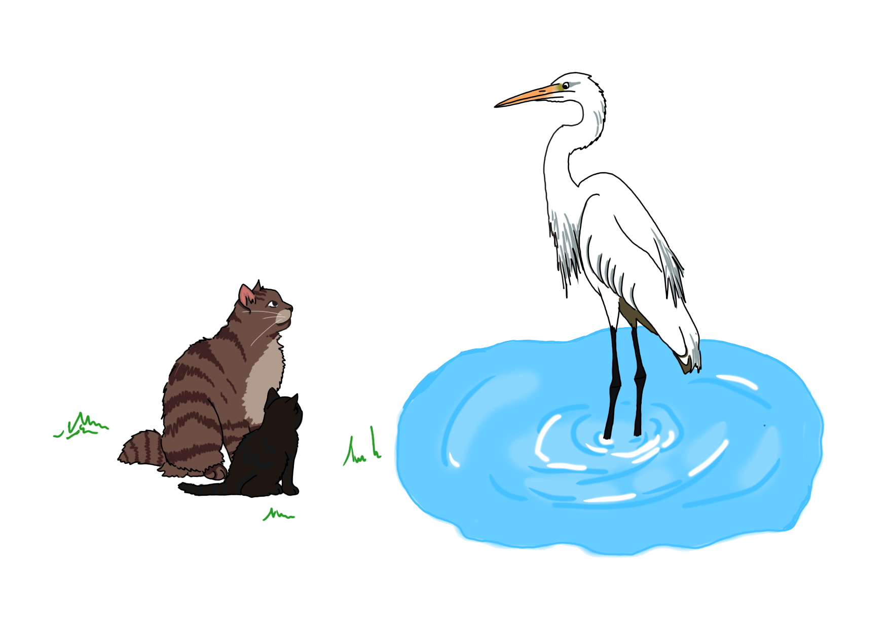

Глава IV
Язык и культура
Солнце садилось, и река стала похожа на расплавленное золото. На берегу сидели двое: старый кот с серебром в усах и совсем маленький угольно-чёрный котёнок.
Кот-полиглот — так прозвали старого учёного кота потому что он знал языки. Не один, не два, а столько, сколько в реках и лесах было жильцов. Он умел говорить с рыбами и птицами, с лягушками и стрекозами, с теми, кто плавает, и с теми, кто роет норы.
Котёнок однажды видел на реке грациозную цаплю - она совсем не боялась воды.
— Дедушка, — спросил котёнок, болтая лапкой над самой водой и пуская спокойные круги — а как будет «река» по-цаплиному?
Старый кот прищурился.
— Ты думаешь, у цапли есть слово «река» — такое же, как у нас, только звучит иначе? Нет, малыш. У цапли нет нашей реки. У неё своя.
Котёнок не понял. Река же одна — вот она, перед ними, шумит и блестит.
— Смотри, — вдруг шепнул кот. — Гостья пожаловала.
По мелководью, осторожно переставляя длинные ноги, шла цапля. Она наклонила голову и что-то коротко проскрипела — резко, отрывисто, будто бросила в воздух несколько маленьких камешков. Это было не мурлыкание, не лай, не кваканье. Это был язык, которого котенок никогда раньше не слышал.

Старый кот ответил ей такими же резкими, точными звуками. Цапля повернула к нему голову.
— Что она сказала? — заёрзал котёнок.
— Она поздоровалась и сказала, что вода сегодня «правильная».
— Какая-какая?
— Светлая и тихая. Понимаешь, для цапли вода — это прежде всего поверхность. Тонкое блестящее зеркало, сквозь которое нужно разглядеть рыбу. У неё есть отдельные слова для ряби, для пятнышек солнца, для тех кругов, которыми рыба выдаёт себя. То, что мы называем одним словом «вода», у цапли разбито на десяток слов, но почти все они про границу между небом и глубиной.
— А глубина?
— А глубину она почти не называет. Туда ей не достать. Для цапли глубокое место - это просто «там, где рыба прячется и куда не дотянуться». Не дом, не дорога - пустое место.
Тут вода у другого берега тяжело плеснула. Появился бобёр - мокрый, деловитый, с веткой в зубах. Он что-то проворчал, медленно и низко, совсем не похоже на цаплю, будто перекатывая во рту тёплые круглые слова.
Старый кот ответил ему — и его собственный голос тоже стал ниже и медленнее.
— А бобер что сказал? — котёнок навострил уши.
— Бобёр жалуется, что течение к вечеру усилилось. Только для него вода — совсем не зеркало. Для него вода — это сила. То, что течёт, давит, что нужно остановить и приручить. У бобра целая россыпь слов про течение: быстрое, ленивое, опасное, такое, которое легко перегородить, и такое, с которым лучше не спорить. А ещё у него есть слово, которого нет ни у цапли, ни у нас с тобой: вода, которую он сам остановил - тихий пруд за плотиной. Это слово у бобра значит почти то же, что у нас слово «дом».
Котёнок сидел тихо. Потом медленно проговорил:
— Получается… цапля смотрит на воду сверху и видит зеркало. Бобёр трогает воду лапами и чувствует силу. А река — одна?
— Река одна, — кивнул старый кот. — А имён у неё много. И каждое имя — настоящее. Цапля живёт над водой, бобёр живёт в воде, а мы живём подальше от неё. И язык у каждого вырос из того, как он живёт. Не из того, какая река на самом деле, а из того, что эта река для него значит.
Река всё текла и текла мимо них — золотая, потом серая, потом совсем тёмная. Её воды величественно несли зеркало цапли, силу бобра, холодные брызги большой воды для двух задумчивых котов на берегу — и ни с кем не спорили. В реке хватало места для всех.